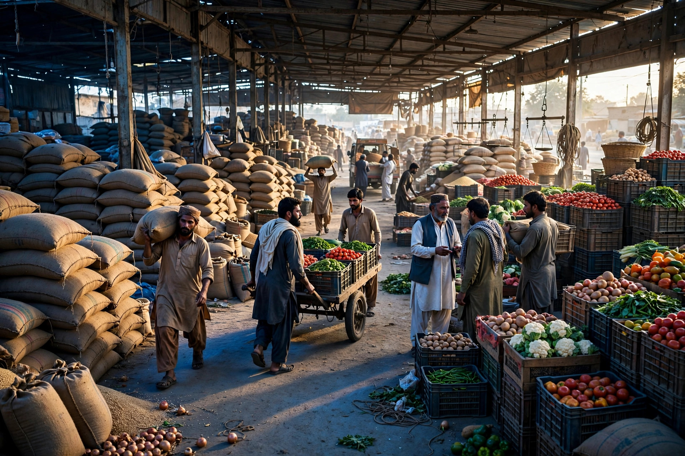
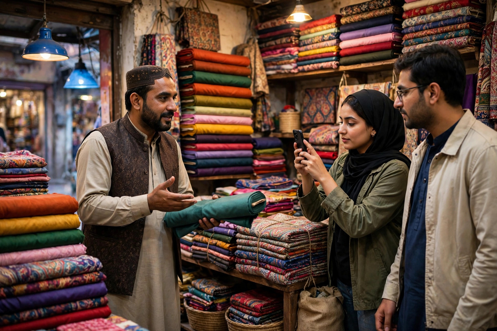

Walk through the main bazaar of Chowk Azam and you will see the real economy of the town: cloth shops, kiryana stores, shoe and garment sellers, mobile phone shops, crockery, spare parts and tea stalls, all competing within a few streets. For years the competition was about location and reputation. Both still matter, but a third factor has joined them. Many customers now check Google before they leave home, and travellers passing on the main road search from their vehicles. The shop that appears on the phone screen gets the visit.
SEO, search engine optimization, is simply the work of making your shop easy for Google to understand and easy for customers to choose. For a market shop it does not begin with a fancy website. It begins with an accurate Google profile, the right words, honest reviews and a little consistency. This guide explains each step in bazaar language. Zaheer Seo Expert is based in Layyah and serves Chowk Azam shops from there, online and by phone, so nothing in this article needs an office visit.
Why Search Matters Even for a Busy Bazaar Shop
A common objection is that everyone in town already knows the shop. That is partly true for old customers, but it misses three groups: young buyers who search first out of habit, families new to the area, and the passing trade on the Multan to Mianwali road, who know nobody in Chowk Azam and rely completely on their phones. It also misses the customer whose regular shop is closed and who searches for an alternative that evening.
Think of SEO as a silent assistant who keeps recommending your shop to people already looking for what you sell. The wider picture is covered in our SEO services in Chowk Azam page, which explains what professional help includes.

Start With the Google Profile, Not a Website
For most market shops, the Google Business Profile brings more customers than any other single step. Claim it, verify it, and complete every field: name as written on your board, the right category, real hours, and a phone number that is answered during business time. If you stock distinctive lines, mention them in the business description in plain words, for example school uniforms, wedding suits or tractor tyres, because those words match what people type.
Add photos regularly. A fresh picture of new seasonal stock, a restocked shelf or your shop lit up in the evening tells customers the business is active. Photos taken on an ordinary phone are fine if they are clear and taken in good light. Avoid dark, blurred pictures, and never upload images copied from the internet, which customers recognise quickly and which can get a listing into trouble.
Use the Words Your Customers Actually Use
Traders describe their goods in trade language, but customers search in everyday language. A wholesaler may say hosiery, while a father types school socks for kids in Chowk Azam. Good SEO means writing your profile description and any web page in the customer’s words first, with trade terms added only where helpful. Add the town name naturally, because many searches include it or rely on phone location.
Think about seasons too. Searches in Chowk Azam follow the calendar: fans and coolers before summer, blankets and jackets in winter, school items before terms start, and seed, fertiliser and parts around sowing and harvest. Updating your description and photos as seasons change keeps the listing relevant. Our article on the keywords Chowk Azam customers use goes deeper into this way of thinking.
- Write product names the way buyers say them
- Mention the town and nearby areas you serve
- Update descriptions for seasonal stock
- Keep trade terms, but never let them replace plain words
Reviews: The Bazaar Reputation, Written Down
In the bazaar, reputation travels by word of mouth. Online, it travels by reviews, and the effect is similar: people choose the shop others praise. Encourage happy customers to review you, especially those who mention helpful service or fair dealing in person. A short request at the counter works better than any trick. Reply to reviews as you would speak to the customer’s face, with thanks and without argument.
Do not fear the occasional low rating. A mix with honest, calm replies often looks more believable than a perfect score that nobody trusts. What damages a shop is ignoring complaints entirely, because future readers assume the complaint was justified. Handling reviews well is a habit, and once the habit forms it takes only minutes a week.
When a Small Website Starts to Make Sense
A single shop with walk-in trade can do well with a profile alone. A website starts to matter when you sell beyond the bazaar: bulk orders, deliveries to surrounding villages, or a speciality line people travel for. A simple site with your products, prices policy, phone number and location gives those customers something fuller to read, and gives Google more to rank.
Keep it modest and fast, written in the same plain words as your profile. One page per main product group is enough for most traders. If you are weighing this step, our guide to a simple website for a Chowk Azam business lists exactly what such a site needs and what it can skip.

Steady Habits Beat Big Campaigns
SEO for a market shop is not a one-week campaign. It is light, regular upkeep: correct hours, fresh photos, answered reviews, seasonal words. Shops that keep these habits tend to stay visible, while shops that pay once for shortcuts usually slide back.
If time is the problem, that upkeep can be handed over. Zaheer Seo Expert, based in Layyah, manages profiles and websites for traders in Chowk Azam by phone and online, with clear reports in simple language. Call 0327 7350830 for an honest conversation about whether your shop needs help at all, because some shops only need their profile completed once and can manage the rest themselves.
Frequently Asked Questions
Does a small bazaar shop really need SEO?
If any of your customers use smartphones, and most now do, then yes, at least the basics. A complete Google profile and honest reviews cost nothing but a little time and help both local buyers and passing travellers find you instead of a competitor.
Should I build a website or just use my Google profile?
Start with the profile, which is free and brings most local searches. Add a simple website when you sell beyond walk-in trade, take bulk orders, or want pages for specific products. Many Chowk Azam traders do well with the profile first and a website later.
Can I do SEO myself without technical knowledge?
The essentials, yes: claiming your profile, adding photos, keeping hours correct and replying to reviews need no technical skill. Deeper work like website structure and keyword research is where professional help saves time, but it is optional, not required.
How does Zaheer Seo Expert work with Chowk Azam shops from Layyah?
Everything is handled online and by phone. We set up or improve your profile and any website remotely, send simple reports, and discuss progress on calls. There is no Chowk Azam office, and none is needed for this kind of work.
Want More Customers From Google?
Call 0327 7350830 or email seozaheer14@gmail.com. Zaheer Seo Expert, Layyah - Rajan Shah Road, Rana Nagar, Chak 116 TDA, Pakistan. Open 24 hours.
Get Your SEO Strategy →